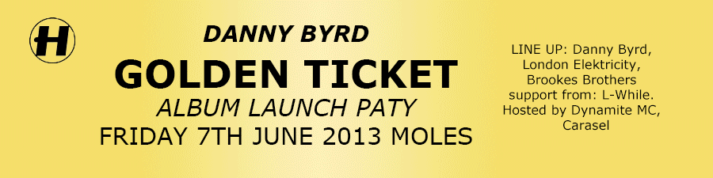

labels
Ram Records
Ram records were started by young Andy C who is now a Drum & Bass legend through his top records he has released through the label and Djing around the world. The label has brought some of the drum and bass big guns such as chase & status who have also made their own in the drum & bass and Dubstep scene, another legend in the making was Sub Focus who had a number 1 selling record in the music chart.
Metal Headz
Metal Heads was created and founded by two top drum and bass djs Kemistry (who has sadly now past away) & storm and Goldie they brought a small label to be one of the drum % bass scenes main record labels today another artist to break the music scene through the record label was Hidden Agenda he started in the early 1990’s and now also a top drum and bass pioneer DJ to watch and listen out for when listening to this music.

Hospitality
Since 1994 this label has grown and grown since it was founded by Tony Colman and Chris Goss the records have never stop flowing out by this labels since it was established. The beauty of this label is how it stays independently owned and just focuses on the music underground scene. This labels has for sure the best Drum and Bass dj’s with names including High Contrast who has been djing and producing since 2000, other top artist include Netsky the young Belgian is one of the top djs around now , London Elektricity who founded this label only started to get into drum and bass in 1999 4 years after creating the label.